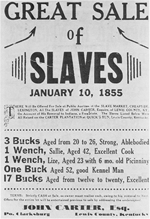
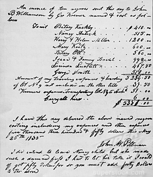

|
The domestic slave trade--the sale of slaves within the United
States--flourished from 1810 to 1860, largely because increased cotton production
required more slave labor, and because foreign trade in slaves was prohibited
after 1808. Most of the slaves involved in the domestic slave trade were sold
from plantations in Maryland, Virginia, North Carolina and the border states to
plantation owners in the Deep South.
During the colonial era, the South suffered from a labor shortage and so
turned to slave labor imported from Africa. For the most part, the domestic
slave trade remained small in this time. Certainly, some slaves were traded
between colonies, particularly as the changing economies of the northern
colonies led Northern slaveholders to sell their slaves south. However, most of
the colonial slave trade was international.
|

An advertisement for a sale of slaves in Kentucky
|
The Constitution, written in 1787, dictates that the importation of slaves
"shall not be prohibited by the Congress prior to the Year one thousand eight
hundred and eight." Once this moratorium expired, however, Congress acted
quickly to ban the international slave trade. This move had the support of
Northern states, most of which had outlawed slavery by 1808. It had the support
of many patriotic Senators and Congressmen, who believed--correctly--that the
slave trade profited America's foremost enemy, Great Britain. Most
interestingly, the ban on the slave trade was also supported by the states of
the Upper South--Virginia, Maryland, and North Carolina, in particular. Because
of the relatively mild climates in these states, slaves had a fairly long life
expectancy. Further, most of the crops produced there were not labor intensive.
Taken together, these two factors meant that by the start of the nineteenth
century, the states of the Upper South had far more slaves than they needed.
They hoped to sell those slaves to the states of the Lower South, and they knew
that banning the international trade--thus reducing supply--would help to drive
prices up.
Outside the Upper South, demand for slaves was growing rapidly by 1808. In
part, this was because the mortality rate of slaves in the Deep South--who were
worked hard, and exposed to many diseases--was greater than it was elsewhere. In
part, it was because new lands--Louisiana, East Florida, Texas--were added to the
Deep South, and they were populated by slave labor. Most important, however, was
the development of the cotton gin in 1793, which made it profitable to separate
the seeds from the fibers of short-staple cotton. Because of their climate and
geography, cotton production was only marginally profitable in Virginia, North
Carolina, and Maryland. It was enormously profitable in the Deep South, however.
As a result, an extensive and lucrative domestic slave trade between the states
of the Upper and Lower South emerged after 1808.
The domestic slave trade followed a distinct pattern. Some slave traders
specialized in buying slaves locally from planters. Such slave traders would
travel from plantation to plantation, usually within a limited geographical
region, and purchase slaves in small numbers. Those traders then took the slaves
they had purchased, perhaps numbering in the hundreds, to a large city with a
slave market. There they sold the slaves to large slave-trading businesses that
operated on an interregional basis. The interregional slave traders transported
slaves from the centers of the slave trade in the Chesapeake region to the Deep
South, where they sold the slaves in markets to cotton, sugar, and rice
planters.

A slave auction in Washington, D.C.
|
The slave-trading centers began around 1810 in towns in Virginia and
Maryland. Alexandria, Va. and Washington, DC, were early slave depots. By 1815,
Baltimore, Md., Norfolk, Va., Richmond, Va., and Lynchburg, Va. were also
centers. By the 1820s, states such as North Carolina and Kentucky were also
important exporters of slaves. Until the Compromise of 1850 prohibited the slave
trade in the District of Columbia, the nation's capital was perhaps the most
important city in the slave trade, as it was in the middle of the
slave-exporting states and its location on the Potomac River made it idea for
transporting slaves overland or via coastal routs.
Slaves who were sold into the domestic slave trade shared certain
characteristics that made them "likely negroes." Most were young--the men because
they made strong laborers, and the women because they had many years of
childbearing left. Children were often sold in a lot with their mothers, for
sellers did not want to bear the cost of raising them while they were still
unproductive. Male slaves were more likely to be sold than female slaves.
Mixed-race Mulatto and Quadroon women were especially sought by slave traders,
for sale as prostitutes or mistresses.
Slaves sold from the plantation and transported to the slave-trading cities
were either kept in public prisons or in large "slave pens." They were sold in
large markets, where they were scrutinized closely by buyers. Buyers checked
slaves as they would animals, examining their teeth, skin, and muscles and
sometimes commanding them to run or leap to test their strength. If they had not
already been parted when sold from the plantation, it was at the slave market
that slaves were usually separated from their families.
Once sold south, slaves faced a long journey. Some, particularly those headed
to New Orleans, were transported in coastal vessels. Despite the shorter length
of the coastal trip compared to crossing the Atlantic, conditions for slaves in
the coastal vessels were no better than they were on the deadly middle passage
from Africa. Mortality rates were frightfully high. More commonly, purchased
slaves traveled in caravans called 'coffles.' Men were chained together by their
necks or hands and guarded by white drivers with whips and guns. The male slaves
were followed by women and children. On foot, the five- or six-hundred mile
journey took two months or more.
|

An invoice for the sale of 10 slaves
|
The domestic slave trade likely delayed the emancipation of slaves in the
eastern slave states, especially in the border states--Delaware, Kentucky,
Maryland, and Missouri. The economies of those states, unlike those in the Deep
South, did not rely exclusively on slavery. The Northern states had divested
themselves of slaves when their economies no longer required them. The eastern
slave states and border states might well have followed suit, especially since
local prices for slaves were low in the 1780s and 1790s. However, with the
elimination the international slave trade and the rise of the domestic trade,
prices jumped. This made slaves too valuable to set free.
The domestic slave trade also increased the suffering of American slaves. The
threat of sale was perhaps the master's most effective tool to coerce his
slaves. Slaves realized that the chances of escape from the Deep South were
greatly diminished, and knew that conditions in the Deep South were likely to be
harsh. Worst of all, the domestic trade separated many slaves from their
families. Buyers in the Deep South tended to purchase slaves who could work
hard, rather than buy slaves in family units. Bills of sale show that husbands
and wives were seldom sold together, and many slave marriages were disrupted.
Likewise, children were regularly separated from their parents. Narratives and
interviews by slaves show much grief at the separation caused by the trade,
which did not end until the outbreak of the Civil War.
Source: Christopher Bates, ed. The Encyclopedia of the Early
Republic and Antebellum America (Armonk, NY: M.E. Sharpe, 2010), 925-928.
|